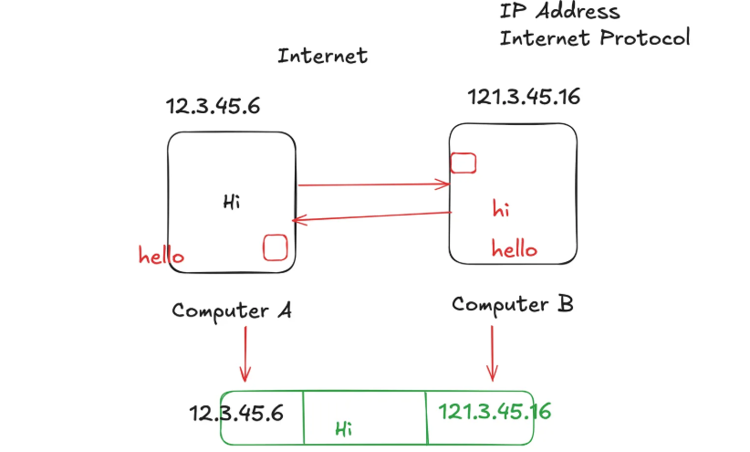

WEB DEVELOPMENT- HTML NOTES
Networking & Internet
1. Basic Network Concept
When two computers are connected, they use IP addresses to communicate. Routers forward packets between networks. Protocols like TCP/IP ensure proper data transfer.
Eg.-
2. ISP & IP Address
Internet Service Providers (ISP) assign IP addresses to devices. IP addresses are of two main versions:
- IPv4: 32-bit, e.g. 192.168.1.1
- IPv6: 128-bit, e.g. 2001:0db8:85a3::8a2e:0370:7334

3. Ports
Ports are used to identify specific processes/services on a device.
| Port Range | Type | Example |
|---|---|---|
| 0–1023 | Well-known | 80=HTTP, 443=HTTPS, 22=SSH |
| 1024–49151 | Registered | 3000=React, 3306=MySQL |
| 49152–65535 | Dynamic | Temporary client ports |

4. MAC Address
MAC address is the unique hardware ID of a network card (48-bit). Works within LAN to forward packets.

5. Private & Public IP
Private IPs are used inside local networks, while Public IPs are globally unique.
- 10.0.0.0 – 10.255.255.255
- 172.16.0.0 – 172.31.255.255
- 192.168.0.0 – 192.168.255.255

6. Routers & ISP
Routers connect multiple networks. ISPs provide internet connection and allocate public IPs. Autonomous Systems (AS) manage large routing blocks.

7. Request-Response Model
Client sends request (HTTP/HTTPS) → Server processes → Response sent back (HTML, JSON, etc).

8. MERN Stack
MERN stack consists of:
- MongoDB – Database
- Express.js – Backend framework
- React.js – Frontend framework
- Node.js – Server runtime